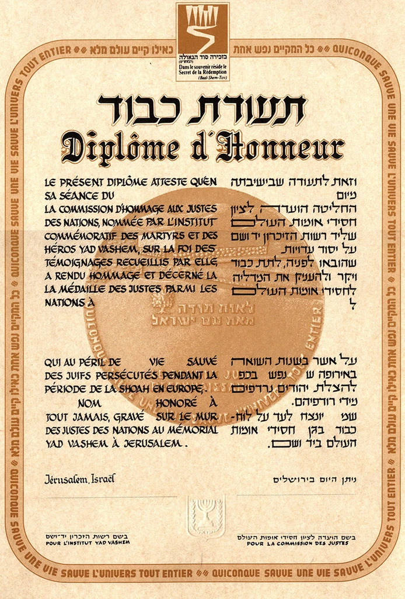

Qu'est-ce qu'un Juste ?
Le titre de Juste parmi les Nations est la plus haute distinction civile de l'État d'Israël. Il est décerné à des personnes non juives qui, au péril de leur vie et de celle de leurs proches, ont aidé des Juifs persécutés par l'occupant nazi, sans demande de contrepartie.
